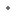
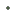

<!doctype html>
<html lang="en">
    <head>
		<meta name="google-site-verification" content="f92jjT0ZaZdbtX_FoaYACYbVca8WoZ-o0ws_aFnR35s" />
        <meta charset="utf-8">
        <meta http-equiv="X-UA-Compatible" content="IE=edge">
        <meta name="viewport" content="initial-scale=1,user-scalable=no,maximum-scale=1,width=device-width">
        <meta name="mobile-web-app-capable" content="yes">
        <meta name="apple-mobile-web-app-capable" content="yes">
        <link rel="stylesheet" href="css/leaflet.css">
        <link rel="stylesheet" href="css/L.Control.Layers.Tree.css">
        <link rel="stylesheet" href="css/qgis2web.css">
        <link rel="stylesheet" href="css/fontawesome-all.min.css">
        <link rel="stylesheet" href="css/leaflet-search.css">
        <link rel="stylesheet" href="css/leaflet.photon.css">
        <style>
        html, body, #map {
            width: 100%;
            height: 100%;
            padding: 0;
            margin: 0;
        }
        </style>
        <title>Oracle Sites and Healing Sanctuaries</title>
    </head>
    <body>
        <div id="map">
        </div>
        <script src="js/qgis2web_expressions.js"></script>
        <script src="js/leaflet.js"></script>
        <script src="js/L.Control.Layers.Tree.min.js"></script>
        <script src="js/leaflet.rotatedMarker.js"></script>
        <script src="js/leaflet.pattern.js"></script>
        <script src="js/leaflet-hash.js"></script>
        <script src="js/Autolinker.min.js"></script>
        <script src="js/rbush.min.js"></script>
        <script src="js/labelgun.min.js"></script>
        <script src="js/labels.js"></script>
        <script src="js/leaflet.photon.js"></script>
        <script src="js/leaflet-search.js"></script>
        <script src="data/Oracle_Sites_Healing_Sanctuaries_1.js"></script>
        <script>
        var highlightLayer;
        function highlightFeature(e) {
            highlightLayer = e.target;

            if (e.target.feature.geometry.type === 'LineString' || e.target.feature.geometry.type === 'MultiLineString') {
              highlightLayer.setStyle({
                color: 'rgba(114, 155, 111, 1.00)',
              });
            } else {
              highlightLayer.setStyle({
                fillColor: 'rgba(114, 155, 111, 1.00)',
                fillOpacity: 1
              });
            }
        }
        var map = L.map('map', {
            zoomControl:false, maxZoom:28, minZoom:1
        }).fitBounds([[37.618972868785804,23.336989161280307],[41.60937069730217,29.112752150148914]]);
        var hash = new L.Hash(map);
        map.attributionControl.setPrefix('<a href="https://github.com/tomchadwin/qgis2web" target="_blank">qgis2web</a> &middot; <a href="https://leafletjs.com" title="A JS library for interactive maps">Leaflet</a> &middot; <a href="https://qgis.org">QGIS</a>');
        var autolinker = new Autolinker({truncate: {length: 30, location: 'smart'}});
        // remove popup's row if "visible-with-data"
        function removeEmptyRowsFromPopupContent(content, feature) {
         var tempDiv = document.createElement('div');
         tempDiv.innerHTML = content;
         var rows = tempDiv.querySelectorAll('tr');
         for (var i = 0; i < rows.length; i++) {
             var td = rows[i].querySelector('td.visible-with-data');
             var key = td ? td.id : '';
             if (td && td.classList.contains('visible-with-data') && feature.properties[key] == null) {
                 rows[i].parentNode.removeChild(rows[i]);
             }
         }
         return tempDiv.innerHTML;
        }
        // modify popup if contains media
        function addClassToPopupIfMedia(content, popup) {
            var tempDiv = document.createElement('div');
            tempDiv.innerHTML = content;
            var imgTd = tempDiv.querySelector('td img');
            if (imgTd) {
                var src = imgTd.getAttribute('src');
                if (/\.(jpg|jpeg|png|gif|bmp|webp|avif)$/i.test(src)) {
                    popup._contentNode.classList.add('media');
                    setTimeout(function() {
                        popup.update();
                    }, 10);
                } else if (/\.(mp3|wav|ogg|aac)$/i.test(src)) {
                    var audio = document.createElement('audio');
                    audio.controls = true;
                    audio.src = src;
                    imgTd.parentNode.replaceChild(audio, imgTd);
                    popup._contentNode.classList.add('media');
                    setTimeout(function() {
                        popup.setContent(tempDiv.innerHTML);
                        popup.update();
                    }, 10);
                } else if (/\.(mp4|webm|ogg|mov)$/i.test(src)) {
                    var video = document.createElement('video');
                    video.controls = true;
                    video.src = src;
                    video.style.width = "400px";
                    video.style.height = "300px";
                    video.style.maxHeight = "60vh";
                    video.style.maxWidth = "60vw";
                    imgTd.parentNode.replaceChild(video, imgTd);
                    popup._contentNode.classList.add('media');
                    // Aggiorna il popup quando il video carica i metadati
                    video.addEventListener('loadedmetadata', function() {
                        popup.update();
                    });
                    setTimeout(function() {
                        popup.setContent(tempDiv.innerHTML);
                        popup.update();
                    }, 10);
                } else {
                    popup._contentNode.classList.remove('media');
                }
            } else {
                popup._contentNode.classList.remove('media');
            }
        }
        var title = new L.Control({'position':'topleft'});
        title.onAdd = function (map) {
            this._div = L.DomUtil.create('div', 'info');
            this.update();
            return this._div;
        };
        title.update = function () {
            this._div.innerHTML = '<h2>Oracle Sites and Healing Sanctuaries</h2>';
        };
        title.addTo(map);
        var abstract = new L.Control({'position':'topleft'});
        abstract.onAdd = function (map) {
            this._div = L.DomUtil.create('div',
            'leaflet-control abstract');
            this._div.id = 'abstract'
                this._div.setAttribute("onmouseenter", "abstract.show()");
                this._div.setAttribute("onmouseleave", "abstract.hide()");
                this.hide();
                return this._div;
            };
            abstract.hide = function () {
                this._div.classList.remove("abstractUncollapsed");
                this._div.classList.add("abstract");
                this._div.innerHTML = 'i'
            }
            abstract.show = function () {
                this._div.classList.remove("abstract");
                this._div.classList.add("abstractUncollapsed");
                this._div.innerHTML = 'A map showing oracle sites (purple), healing sanctuaries (green) of the ancient mediterranean world. Based on Trevor Curnow\'s Oracles of the Ancient World (2005) this map was created for my BA thesis. Data was enriched using multiple methods (see readme). Users can search for spesific sites by clicking the binocular icon.';
        };
        abstract.addTo(map);
        var zoomControl = L.control.zoom({
            position: 'topleft'
        }).addTo(map);
        var bounds_group = new L.featureGroup([]);
        function setBounds() {
        }
        map.createPane('pane_ESRISatellite_0');
        map.getPane('pane_ESRISatellite_0').style.zIndex = 400;
        var layer_ESRISatellite_0 = L.tileLayer('https://server.arcgisonline.com/ArcGIS/rest/services/World_Imagery/MapServer/tile/{z}/{y}/{x}', {
            pane: 'pane_ESRISatellite_0',
            opacity: 1.0,
            attribution: '',
            minZoom: 1,
            maxZoom: 28,
            minNativeZoom: 0,
            maxNativeZoom: 20
        });
        layer_ESRISatellite_0;
        map.addLayer(layer_ESRISatellite_0);
        function pop_Oracle_Sites_Healing_Sanctuaries_1(feature, layer) {
            layer.on({
                mouseout: function(e) {
                    for (var i in e.target._eventParents) {
                        if (typeof e.target._eventParents[i].resetStyle === 'function') {
                            e.target._eventParents[i].resetStyle(e.target);
                        }
                    }
                },
                mouseover: highlightFeature,
            });
            var popupContent = '<table>\
                    <tr>\
                        <th scope="row">Site Name</th>\
                        <td class="visible-with-data" id="Site Name">' + (feature.properties['Site Name'] !== null ? autolinker.link(String(feature.properties['Site Name']).replace(/'/g, '\'').toLocaleString()) : '') + '</td>\
                    </tr>\
                    <tr>\
                        <th scope="row">Site Type</th>\
                        <td class="visible-with-data" id="recogito_tags">' + (feature.properties['recogito_tags'] !== null ? autolinker.link(String(feature.properties['recogito_tags']).replace(/'/g, '\'').toLocaleString()) : '') + '</td>\
                    </tr>\
                    <tr>\
                        <th scope="row">Description</th>\
                        <td class="visible-with-data" id="Topos_description">' + (feature.properties['Topos_description'] !== null ? autolinker.link(String(feature.properties['Topos_description']).replace(/'/g, '\'').toLocaleString()) : '') + '</td>\
                    </tr>\
                    <tr>\
                        <th scope="row">Comments</th>\
                        <td class="visible-with-data" id="recogito_comments">' + (feature.properties['recogito_comments'] !== null ? autolinker.link(String(feature.properties['recogito_comments']).replace(/'/g, '\'').toLocaleString()) : '') + '</td>\
                    </tr>\
                    <tr>\
                        <th scope="row">ToposText</th>\
                        <td class="visible-with-data" id="link_ToposText">' + (feature.properties['link_ToposText'] !== null ? autolinker.link(String(feature.properties['link_ToposText']).replace(/'/g, '\'').toLocaleString()) : '') + '</td>\
                    </tr>\
                    <tr>\
                        <th scope="row">Gazetteer Link</th>\
                        <td class="visible-with-data" id="recogito_uri">' + (feature.properties['recogito_uri'] !== null ? autolinker.link(String(feature.properties['recogito_uri']).replace(/'/g, '\'').toLocaleString()) : '') + '</td>\
                    </tr>\
                    <tr>\
                        <th scope="row">Wikipedia Link</th>\
                        <td class="visible-with-data" id="Topos_Wikipedia">' + (feature.properties['Topos_Wikipedia'] !== null ? autolinker.link(String(feature.properties['Topos_Wikipedia']).replace(/'/g, '\'').toLocaleString()) : '') + '</td>\
                    </tr>\
                    <tr>\
                        <td class="visible-with-data" id="merged_wikimediaurl" colspan="2"><strong>Wikimedia Image</strong><br />' + (feature.properties['merged_wikimediaurl'] !== null ? autolinker.link(String(feature.properties['merged_wikimediaurl']).replace(/'/g, '\'').toLocaleString()) : '') + '</td>\
                    </tr>\
                </table>';
            var content = removeEmptyRowsFromPopupContent(popupContent, feature);
			layer.on('popupopen', function(e) {
				addClassToPopupIfMedia(content, e.popup);
			});
			layer.bindPopup(content, { maxHeight: 400 });
        }

        function style_Oracle_Sites_Healing_Sanctuaries_1_0(feature) {
            switch(String(feature.properties['recogito_tags'])) {
                case 'both':
                    return {
                pane: 'pane_Oracle_Sites_Healing_Sanctuaries_1',
                radius: 4.0,
                opacity: 1,
                color: 'rgba(35,35,35,1.0)',
                dashArray: '',
                lineCap: 'butt',
                lineJoin: 'miter',
                weight: 1,
                fill: true,
                fillOpacity: 1,
                fillColor: 'rgba(166,206,227,1.0)',
                interactive: true,
            }
                    break;
                case 'healing sanctuary':
                    return {
                pane: 'pane_Oracle_Sites_Healing_Sanctuaries_1',
                radius: 4.0,
                opacity: 1,
                color: 'rgba(35,35,35,1.0)',
                dashArray: '',
                lineCap: 'butt',
                lineJoin: 'miter',
                weight: 1,
                fill: true,
                fillOpacity: 1,
                fillColor: 'rgba(133,182,111,1.0)',
                interactive: true,
            }
                    break;
                case 'oracle':
                    return {
                pane: 'pane_Oracle_Sites_Healing_Sanctuaries_1',
                radius: 4.0,
                opacity: 1,
                color: 'rgba(35,35,35,1.0)',
                dashArray: '',
                lineCap: 'butt',
                lineJoin: 'miter',
                weight: 1,
                fill: true,
                fillOpacity: 1,
                fillColor: 'rgba(141,90,153,1.0)',
                interactive: true,
            }
                    break;
                default:
                    return {
                pane: 'pane_Oracle_Sites_Healing_Sanctuaries_1',
                radius: 4.0,
                stroke: false,
                fill: true,
                fillOpacity: 1,
                fillColor: 'rgba(196,60,57,1.0)',
                interactive: true,
            }
                    break;
            }
        }
        map.createPane('pane_Oracle_Sites_Healing_Sanctuaries_1');
        map.getPane('pane_Oracle_Sites_Healing_Sanctuaries_1').style.zIndex = 401;
        map.getPane('pane_Oracle_Sites_Healing_Sanctuaries_1').style['mix-blend-mode'] = 'normal';
        var layer_Oracle_Sites_Healing_Sanctuaries_1 = new L.geoJson(json_Oracle_Sites_Healing_Sanctuaries_1, {
            attribution: '',
            interactive: true,
            dataVar: 'json_Oracle_Sites_Healing_Sanctuaries_1',
            layerName: 'layer_Oracle_Sites_Healing_Sanctuaries_1',
            pane: 'pane_Oracle_Sites_Healing_Sanctuaries_1',
            onEachFeature: pop_Oracle_Sites_Healing_Sanctuaries_1,
            pointToLayer: function (feature, latlng) {
                var context = {
                    feature: feature,
                    variables: {}
                };
                return L.circleMarker(latlng, style_Oracle_Sites_Healing_Sanctuaries_1_0(feature));
            },
        });
        bounds_group.addLayer(layer_Oracle_Sites_Healing_Sanctuaries_1);
        map.addLayer(layer_Oracle_Sites_Healing_Sanctuaries_1);
        var overlaysTree = [
            {label: 'Oracle_Sites_Healing_Sanctuaries<br /><table><tr><td style="text-align: center;"></td><td>Both</td></tr><tr><td style="text-align: center;"></td><td>Healing Sanctuary</td></tr><tr><td style="text-align: center;"></td><td>Oracular Sanctuary</td></tr><tr><td style="text-align: center;"></td><td>Other</td></tr></table>', layer: layer_Oracle_Sites_Healing_Sanctuaries_1},
            {label: "ESRI Satellite", layer: layer_ESRISatellite_0},]
        var lay = L.control.layers.tree(null, overlaysTree,{
            //namedToggle: true,
            //selectorBack: false,
            //closedSymbol: '&#8862; &#x1f5c0;',
            //openedSymbol: '&#8863; &#x1f5c1;',
            //collapseAll: 'Collapse all',
            //expandAll: 'Expand all',
            collapsed: true,
        });
        lay.addTo(map);
        setBounds();
        map.addControl(new L.Control.Search({
            layer: layer_Oracle_Sites_Healing_Sanctuaries_1,
            initial: false,
            hideMarkerOnCollapse: true,
            propertyName: 'Site Name'}));
        if (typeof url === 'undefined') {
            document.getElementsByClassName('search-button')[0].className += ' fa fa-binoculars';
        } else {
            document.getElementsByClassName('search-button')[1].className += ' fa fa-binoculars';
        }
        </script>        
    </body>
</html>
